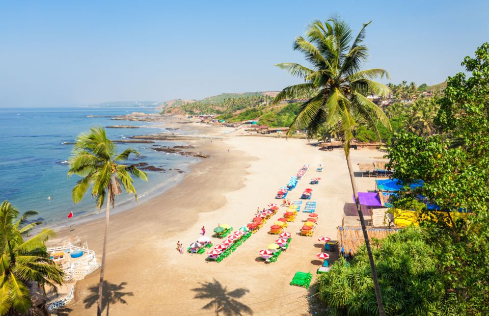

Adventour
North Goa:Beach
North Goa is renowned for its picturesque and lively beaches that attract tourists
from all over
the world. The region boasts an array of stunning beaches, each with its own charm and
character.
Calangute Beach:
Calangute Beach is one of the most popular and busiest beaches in North Goa, located about
16 km from Panaji, the capital city. It is a long and wide stretch of golden sand with gentle waves, making
it
ideal for swimming and sunbathing.
Calangute Beach is known for its lively atmosphere and numerous beach
shacks that serve a variety of food and drinks. Visitors can enjoy local delicacies like seafood, Goan
curries,
and refreshing coconut water while enjoying the sea view. The beach also offers various water sports
activities
like parasailing, jet skiing, banana boat rides, and more.
In addition to water sports and beach activities, Calangute Beach is also home to several shops selling
souvenirs, clothing, and handicrafts. The beach is a perfect place to take a leisurely stroll or relax and
watch
the sunset over the Arabian Sea.
During the peak tourist season, Calangute Beach can get crowded with both local and foreign visitors, but it
remains one of the most popular destinations in North Goa for its lively vibe, scenic beauty, and fun-filled
activities.

Baga Beach:
Baga Beach is a popular tourist destination in North Goa, known for its lively
atmosphere,
water sports activities, and vibrant nightlife. The beach is a long and wide stretch of golden sand that
offers
plenty of space for visitors to relax and sunbathe. It is also home to numerous shacks that serve a variety
of
food and drinks, including fresh seafood and cocktails. Baga Beach is famous for its water sports
activities,
including parasailing, jet skiing, banana boat rides, and more. Additionally, the area surrounding the beach
is
home to numerous nightclubs, bars, and restaurants that offer a variety of entertainment options. Baga Beach
is
a must-visit destination in North Goa for those looking for a fun-filled vacation.
Anjuna Beach:
Anjuna Beach is a popular tourist destination in North Goa, known for its scenic
beauty, vibrant atmosphere, and hippie culture. The beach is a crescent-shaped stretch of golden sand
surrounded by rocky cliffs and palm trees. Visitors can indulge in water sports activities like jet skiing,
parasailing, and swimming. The area surrounding the beach is home to numerous restaurants, cafes, and bars
that offer a variety of entertainment options, including live music, DJ sets, and cultural performances. The
beach is also famous for its lively flea market, held every Wednesday, offering a variety of handicrafts,
jewelry, and clothing. Anjuna Beach is a must-visit destination in North Goa for its vibrant atmosphere and
cultural significance.

Candolim Beach:
Candolim Beach is a popular tourist destination in North Goa, known for its peaceful
atmosphere and scenic beauty. The beach is a long and wide stretch of golden sand, bordered by palm trees
and casuarina groves. It is ideal for swimming and sunbathing, and visitors can also indulge in water sports
activities like jet skiing, parasailing, and banana boat rides. The beach is home to numerous shacks that
offer a variety of food and drinks, including fresh seafood and cocktails. The area surrounding the beach is
home to numerous restaurants, cafes, and bars that offer a variety of entertainment options, including live
music and cultural performances. Overall, Candolim Beach is a must-visit destination in North Goa for those
looking for a peaceful and relaxing vacation.
Vagator Beach:
Vagator Beach is a popular beach located in North Goa, India. It is known for its stunning views of the
Arabian Sea, picturesque red cliffs, and white sandy beaches. The beach is a crescent-shaped stretch of
golden sand, bordered by coconut trees and palm groves. It is ideal for swimming, sunbathing, and
relaxing.
The beach has a lively atmosphere, with many shacks offering a variety of food and drinks, including fresh
seafood and cocktails. Visitors can also indulge in water sports activities such as parasailing, jet skiing,
and banana boat rides. Vagator Beach is also known for its vibrant nightlife scene, with numerous bars,
clubs, and restaurants offering a variety of entertainment options, including live music and cultural
performances.
The area surrounding the beach is home to numerous souvenir shops and handicraft stores that sell a variety
of local products, including jewelry, clothing, and art. Vagator Beach is also close to several other
popular tourist attractions, including the Chapora Fort and the Anjuna Flea Market. Overall, Vagator Beach
is a must-visit destination for those looking for a fun and lively beach experience in Goa.
Arambol Beach:
Arambol Beach is a popular beach located in North Goa, India. It is known for its serene and laid-back
atmosphere, making it a favorite spot for travelers seeking peace and relaxation. The beach is a long
stretch of golden sand, bordered by palm trees and scenic cliffs. It is ideal for swimming, sunbathing, and
relaxing.
The beach is also known for its vibrant yoga and meditation scene, with several yoga centers and wellness
retreats located nearby. Visitors can also indulge in water sports activities such as surfing and
paragliding. The beach has a bohemian vibe and is home to numerous shacks that offer a variety of food and
drinks, including fresh seafood and organic juices.
Arambol Beach is also known for its live music scene, with many bars and cafes hosting nightly performances
by local and international musicians. The area surrounding the beach is home to several souvenir shops and
handicraft stores that sell a variety of local products, including jewelry, clothing, and art. Overall,
Arambol Beach is a must-visit destination for those seeking a peaceful and laid-back beach experience in
Goa.
Also Read